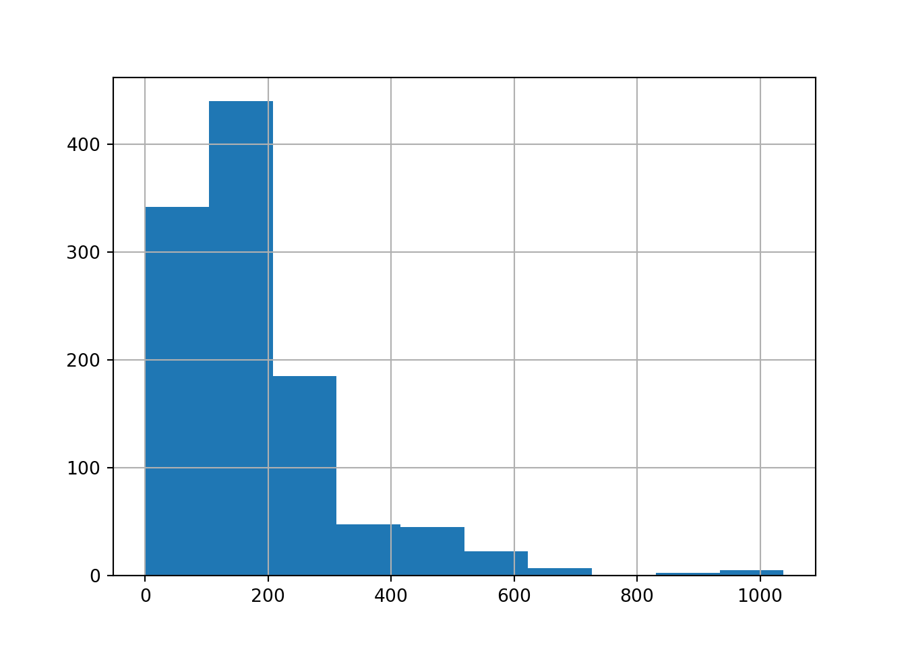

7 További FAE becslések és a Bootstrap módszer
7.1 A Konfidencia-intervallumok két általános tulajdonsága
Az átlagra vonatkozó konfidencia-intervallumokkal kapcsolatos számolások során megállapítottunk két olyan általános tulajdonságot a konfidencia-intervallumok hosszára, azaz a teljes becslési hibahatárra \(\triangle\)-re vonatkozóvan, amelyek igazak lesznek az összes többi - a tárgyban vizsgált - statisztikai mutató konfidencia-intervallumára is:
- A megbízhatóság növelésével a konfidencia-intervallum egyre csak tágul, azaz a becslési hibahatár folyamatosan nő. Tehát, nagyobb megbízhatóságú becslés csak pontatlanabb konfidencia-intervallum árán érhető el.
- Mivel a továbbiakban is konzisztensen viselkedő becslőfüggvényekkel (\(\hat{\theta}\)-kal) fogunk dolgozni, így kijelenthető, hogy a mintaelemszám (\(n\)) növelésével, a \(SH\) értéke csökken. A csökkenő \(SH\) miatt pedig az egész konfidencia-intervallum pontosabb lesz. Magyarul az elemszém növelésével a konfidencia-intervallum hossza, leánykori nevén becslési hibahatár (\(\triangle\)) csökken.
A következő két fejezetben figyeljük meg, hogy minden újabb statisztikai mutató konfidencia-intervalluma a feni két tulajdonságot betartva fog viselkedni!
7.2 Arányok konfidencia-intervalluma
Vegyük elő újra a ESS2020.xlsx fájlban található adatbázist! Emlékeztetőül álljon itt, hogy ez az adatbázis a 2020-ban végzett európai szociális felmérés (European Social Survey 2020 = ESS2020) 1849 magyar kitöltöjének válaszait tartalmazza 14 kérdésre (plusz van egy id oszlop).
Ugyebár a 6.4. fejezet 2. feladatában azt mondtuk, hogy ha az adatbázis valamelyik oszlopában üres értéket találunk, akkor az azt jelenti, hogy az adott sorban lévő kitöltő nem válaszolt a kérdésre. Az adatbázisban szereplő kitöltők a teljes 18 év feletti magyar népességből vett véletlen mintaként kezelhetők. Most feltesszük, hogy ez a véletlen minta visszatevéses, azaz \(FAE\) is. A következő tananyagban látni fogjuk, hogy ez nem is valóságtól elrugaszkodott feltevés.
Először is töltsök be az adatbázist ismét az Excelből egy pandas data frame-be és nézzük meg az info metódussal milyen oszlopaink (azaz ismérveink) vannak!
# Elemzéshez és ábrázoláshoz szükséges csomagok betöltése
import numpy as np
import pandas as pd
import matplotlib.pyplot as plt
import scipy.stats as stats
from statsmodels.stats.meta_analysis import combine_effects
from statsmodels.graphics.dotplots import dot_plot
# Adatbeolvasás data frame-be
ESS = pd.read_excel("ESS2020.xlsx")
ESS.info()## <class 'pandas.core.frame.DataFrame'>
## RangeIndex: 1849 entries, 0 to 1848
## Data columns (total 15 columns):
## # Column Non-Null Count Dtype
## --- ------ -------------- -----
## 0 id 1849 non-null int64
## 1 PoliticalRadioTVPerDay_Minutes 1796 non-null float64
## 2 NetUsePerDay_Minutes 1099 non-null float64
## 3 TrustInParlament 1849 non-null object
## 4 PoliticalPartyPref 1849 non-null object
## 5 Education_Years 1830 non-null float64
## 6 WeeklyWork_Hours 685 non-null float64
## 7 Region 1849 non-null object
## 8 County 1849 non-null object
## 9 SecretGroupInfluenceWorldPol 1849 non-null object
## 10 ScientistsDecievePublic 1849 non-null object
## 11 COVID19 1849 non-null object
## 12 ContactCOVID19 1849 non-null object
## 13 GetVaccince 1849 non-null object
## 14 SomeContactCOVID19 1849 non-null object
## dtypes: float64(4), int64(1), object(10)
## memory usage: 216.8+ KBLáthatjuk, hogy megvan mind a 14+1 oszlopunk a megfelelő adattípusokkal. Hurrá! :)
Feladatunk ezúttal az lenne, hogy 99%-os megbízhatóságú konfidencia-intervallumot építsünk a Fideszt támogatók arányára!
Szerencsére ezt aránylag könnyű megtenni, hiszen egy adott tulajdonsággal bíró egyedek aránya lényegében egy átlag! Konkrétan egy olyan változó átlaga, ahol a tulajdonsággal bíró egyedek \(1\) értéket, míg a tulajdonsággal NEM rendelkező egyedek \(0\) értéket kapnak.
Ezt könnyű is szemléltetni Python-ban. Vegyük a feladat szempontjából releváns a PoliticalPartyPref ismérv relatív gyakoriságait a value_counts metódus segítségével:
# Teljes mintaelemszám megadása
n = ESS.PoliticalPartyPref.count()
# Relatív Gyakoriságok
ESS.PoliticalPartyPref.value_counts() / n## PoliticalPartyPref
## Nem Ismert 0.643050
## Fidesz-KDNP 0.197404
## Egyesült Ellenzék 0.148729
## Egyéb 0.010817
## Name: count, dtype: float64Ez alapján ugye a Fidesz támogatóinak aránya a megfigyelt 1849 elemű mintában \(19.7\%\). Ezt az eredményt pedig úgy is megkaphatjuk, hogy csinálunk egy új Fidesz nevű oszlopot az ESS nevű data frame-be, amiben a Fidesz támogatók \(1\) értéket kapnak, a többiek \(0\)-t, és vesszük az új oszlop átlagát.
Az új oszlop létrehozásához a numpy csomag where néven futó függvényét használjuk. Ez lényegében olyan, mint az Excel HA függvénye: egy logikai feltétel megadása után értéket adunk az új oszlopban a feltétel igaz ágon, majd utána a feltétel hamis ágon.
# Létrehozzuk a Fidesz nevű oszlopot!
ESS['Fidesz'] = np.where(ESS.PoliticalPartyPref=='Fidesz-KDNP', 1, 0)
# És vesszük az új oszlop átlagát
np.average(ESS.Fidesz)## 0.19740400216333154Ismét megkaptuk a \(19.7\%\)-os támogatottsági arányt. Ez alapján pedig könnyen elkészíthetjük rá a 99%-os megíbzhatóságú konfidencia-intervallumot a scipy csomag stats.norm.interval függvényével. Hiszen a nagy mintaelemszám miatt nem szükséges a \(k\) szorzót t-eloszlásból számolni, bőven megfelel nekünk a standard normális eloszlás alkalmazása is.
stats.norm.interval(
confidence=0.99,
loc=np.mean(ESS.Fidesz),
scale=stats.sem(ESS.Fidesz, nan_policy = 'omit'))## (0.1735537723743666, 0.2212542319522965)Tehát, a mintánk alapján a magyar népesség egészét tekintve az mondható el, hogy 99%-os valószínűséggel legalább \(17.4\%\)-uk támogatja a Fidesz-KDNP-t, viszont szintén 99%-os valószínűséggel kijelenthető, hogy a támogatottsági arányuk nem magasabb \(22.1\%\)-nál.
A teljes népességre nézve vett Fidesz támogatottság vizsgálható a statsmodels csomag combine_effects függvényével regionális bontásban is.
Mielőtt a combine_effects függvényt használnánk, csináljuk meg a kiinduló kimutatást az ESS data frame groupby metódusával:
- A nominális ismérvünk, azaz most a
Regionegyedi értékei szerint vesszük az átlaggal vizsgált mennyiségi ismérv (mostFidesz) részátlagait - Utána ezen részátlagok \(SH^2\)-eit, azaz becslési varianciáit is megadjuk.
RegionKimutatas = ESS.groupby("Region").agg(
Elemszam = ('Fidesz', 'count'),
Atlag = ("Fidesz", np.mean),
SH = ("Fidesz", stats.sem)
)## <string>:1: FutureWarning: The provided callable <function mean at 0x00000293B0D613A0> is currently using SeriesGroupBy.mean. In a future version of pandas, the provided callable will be used directly. To keep current behavior pass the string "mean" instead.## Elemszam Atlag SH BecslesiVar
## Region
## Budapest 298 0.248322 0.025069 0.000628
## Dél-Alföld 167 0.125749 0.025734 0.000662
## Dél-Dunántúl 143 0.153846 0.030278 0.000917
## Közép-Dunántúl 242 0.219008 0.026641 0.000710
## Nyugat-Dunántúl 221 0.167421 0.025171 0.000634
## Pest 265 0.222642 0.025604 0.000656
## Észak-Alföld 305 0.144262 0.020152 0.000406
## Észak-Magyarország 208 0.264423 0.030653 0.000940Látható, hogy a mintán belül a Fidesz támogatottsága az Dél-Dunántúlon csak 15.4%, míg Nyugat-Dunántúlon 16.7%. Kérdés, hogy ezek a különbségek a mintavételi hiba, azaz a 99%-os megbízhatóságú konfidencia-intervallum figyelembe vételével is megmaradnak-e!
Ami fontos még az előbb elkészített kimutatásból, hogy minden régióban megvan a nagy elemszám (\(n>30\)), így nyugodtan használható a \(k\) megbízhatósági szorzót standard normális eloszlásból számító combine_effects függvény. A függvény paraméterezési szabályait lásd a 6.6. fejezetben.
eredmeny = combine_effects(
effect = RegionKimutatas.Atlag,
variance = RegionKimutatas.BecslesiVar,
row_names = RegionKimutatas.index,
alpha = (1-0.99)
)
# a summary_frame eredményéból az első 8 sor kell nekünk,
# mert 8 régió szerint vizsgáljuk a támogatottsági arányokat!
eredmeny_tabla = eredmeny.summary_frame().iloc[0:8,0:4]
eredmeny_tabla## eff sd_eff ci_low ci_upp
## Budapest 0.248322 0.025069 0.199187 0.297457
## Dél-Alföld 0.125749 0.025734 0.075310 0.176187
## Dél-Dunántúl 0.153846 0.030278 0.094503 0.213189
## Közép-Dunántúl 0.219008 0.026641 0.166794 0.271223
## Nyugat-Dunántúl 0.167421 0.025171 0.118086 0.216756
## Pest 0.222642 0.025604 0.172458 0.272825
## Észak-Alföld 0.144262 0.020152 0.104766 0.183759
## Észak-Magyarország 0.264423 0.030653 0.204344 0.324503Az eredményül kapott táblából ismételten látható, hogy a mintán belül a Fidesz támogatottsága az Dél-Alföldön csak 12.6%, míg Dél-Dunántúlon már 15.4%. Azonban, ha a konfidencia-intervallum segítségével a teljes népességet vizsgáljuk, akkor ez 99%-os valószínűséggel egy NEM szignifikáns (jelentős) eltérés, mivel a két konfidencia-intervallum metszi egymást! Tehát a teljes népességben elképzelhető legjobb esetben egy 17.6%-os támogatottság is a Dél-Alföldön, míg a legrosszabb esetben belefér a Dél-Dunántúlon 9.5%-os támogatottság is. Tehát, az, hogy a Dél-Dunántúlon magasabb a Fidesz támogatottsági arány a mintában, az lehet csak a mintavételi hiba műve 99%-os megbízhatósággal! Ellenben az Észak-Magyarországi Fidesz támogatottság 99% valószínűséggel a sokaságban is magasabb, mint a Dél-Alföldi, hiszen a Dél-Alföldön a támogatottság legjobb esetben is csak 17.6%, míg Észak-Magyarországon legrosszabb esetben is már 20.4%. Tehát a két konfidencia-intervallum NEM metszi egymást, a mintában mért eltérések 99% valószínűséggel megmaradnak a sokaságban is!
Az eredményekről ugyan úgy készíthetünk forest diagramot, mint a pártpreferenciák szerint bontott átlagos netezési időkről a 6.6. fejezetben. Itt ugyebár a statsmodels csomag dot_plot függvényét vetjük be. Ennek a használatáról is bővebb információk a 6.6. fejezetben találhatók.
# konfidencia-intervallumok méretének megadása az ábrához
intervallumok = np.abs(eredmeny_tabla[["ci_low", "ci_upp"]] - eredmeny_tabla[["eff"]].values)
intervallumok## ci_low ci_upp
## Budapest 0.049135 0.049135
## Dél-Alföld 0.050439 0.050439
## Dél-Dunántúl 0.059343 0.059343
## Közép-Dunántúl 0.052215 0.052215
## Nyugat-Dunántúl 0.049335 0.049335
## Pest 0.050183 0.050183
## Észak-Alföld 0.039496 0.039496
## Észak-Magyarország 0.060080 0.060080# ábra elkészítése
dot_plot(
points=eredmeny_tabla["eff"],
intervals = intervallumok,
lines=eredmeny_tabla.index)
# ábra megjelenítése
plt.tight_layout() # ne csússzanak ki a tengelyfeliratok
plt.show()Az előbb taglalt, 99%-os megbízhatósággal a sokaságban is szignifikáns eltérés Dél-Alföld és Észak-Magyarország között. Az is látszik, hogy hasonló szignifikáns különbség még ezen kívül Dél-Alföld és Budapest Fidesz támogatottsági aránya között található.
7.2.1 Mintaelemszám meghatározása aránybecsléshez
Érdemes az arány konfidencia-intervallumának számítása során felhasználni azt az információt, hogy egy csak 0-ból és 1-ből álló változó korrigált mintaszórása \(s=\sqrt{p(1-p)}\) módon számítható, ahol \(p\) az \(1\) értékek aránya a mintában!
Nézzük is meg, hogy igaz-e ez! Ugyebár a Fidesz támogatottsági aránya a teljes 1849 elemű mintában \(p=19.7\%\). Ez alapján a szórása a Fidesz nevű 0-1-ből álló változónak \(s=\sqrt{p(1-p)}=\sqrt{0.197 \times (1-0.197)}=0.3977323\).
Nézzük meg az eredményt a numpy csomag std függvényével is:
## 0.3980397745115843A kétféleképp számolt érték némi kerekítési hibát leszámítva egyezik! :) De hát ez nem meglepő, hogy így alakult, hiszen az 5.5. fejezetben éppen azt mondtuk, hogy a mintaarányok (a \(p\)-k) standard mintavételi hibája a \(SH(p) \approx \sqrt{\frac{p(1-p)}{n}}\) képlettel megadható. :)
Ez azt jelenti, hogy az arány konfidencia-intervallumának hossza a \(\triangle = SH \times k\) képlet alapján \(\sqrt{\frac{p(1-p)}{n}} \times k\) módon számítható, hiszen az átlag standard hibája \(\frac{s}{\sqrt{n}}\) volt, és most felhasználtuk, hogy csak 0-1-et tartalmazó változókra \(s=\sqrt{p(1-p)}\). A \(k\) megbízhatósági szorzó pedig ugyan úgy \(N(0,1)\) eloszlással számolható nagy méretű minták esetén, mint az átlag konfidencia-intervallumánál. Hiszen magas \(n\) esetén a \(t(n-1)\) eloszlás sűrűségfüggvénye már lényegében egybeesik az \(N(0,1)\) eloszlás sűrűségfüggvényével, ahogy a 6.4. fejezet 2. feladatában is láttuk.
Ennyi információ alapján pedig képesek vagyunk arra, hogy még mintavétel ELŐTT meghatározzuk, hogy az arány egy adott pontosságú és megbízhatóságú becsléséhez mekkora elemszámú mintára van szükségünk.
Hiszen \(99\%\)-os megbízhatósági szint mellett a szükséges megbízhatósági \(k\) szorzó a standard normális, azaz \(N(0,1)\) eloszlás inverz értéke alapján megadható \(z_{1-\frac{\alpha}{2}}\) módon:
## 2.5758293035489004Vegyük az értéket kerekítve \(k=2.6\)-nak!
Ugyebár azt tudjuk, hogy a jelenlegi 1849 elemű mintánk esetén Fidesz támogatottsági aránya \(p=19.7\%\), amitől a támogatottsági arány valós sokasági értéke 99%-os valószínűséggel \(\pm\) 2.4 százalékpontos hibahatárral térhet el: \[\pm \triangle = SH \times k = \sqrt{\frac{p(1-p)}{n}} \times k = \sqrt{\frac{0.197 \times (1-0.197)}{1849}} \times 2.6=0.0240\]
De mi a helyzet, ha a hibahatár értékét 1 százalékpontra akarom csökkenteni és meg akarom őrizni a 99%-os megízhatósági szintet? Ekkor nagyobb mintát kell venni, kérdés, hogy mennyivel nagyobbat. Ezek alapján a kívánt \(\triangle\) érték \(0.01\) és a \(k=2.6\) értékből sem akarok engedi. Azaz: \[0.01 = \sqrt{\frac{p(1-p)}{n}} \times 2.6\]
Ebből \(n\)-t kifejezve: \[n=\frac{2.6^2 \times p(1-p)}{0.01^2}\]
Ezen a ponton nagy a csábítás, hogy a képletből úgy számoljuk ki \(n-t\), hogy \(p=19.7\%\)-kal dolgozzunk. De ezt ne tegyük! Mivel nem tudjuk, hogy a megnövelt elemszámú mintában mennyi is lesz \(p\). Plusz, ha a szükséges mintaelemszámot AZELŐTT akarjuk meghatározni, hogy a kérdéses \(p\) arány becslésére már vettünk mintát, akkor aztán tényleg lövésünk nincs a \(p\) értékéről!
Szerencsére, rájöhetünk, hogy a \(p(1-p)\) kifejezésnek könnyen meg tudjuk adni a maximumát, hiszen az \(f(p)=p(1-p)=p-p^2\) függvény egy fordította parabola, melynek maximuma \(p=0.5\)-nél kerül felvételre és értéke \(max(p(1-p))=0.25\):

Szóval az \(N=\frac{2.6^2 \times p(1-p)}{0.01^2}\) formulába mindig beírhatjuk a \(0.25\)-öt, hiszen ez a legrosszabb szituációnk, ekkor lesz aránybecslés esetén maximális a standard hibánk. Ha elégség nagy mintát veszünk, hogy a maximális \(SH\) mellett is \(\triangle = 0.01\)-et érjünk el, akkor minden egyéb esetben is jók vagyunk.
Tehát, az 1 százalékpontos hibahatár eléréséhez szükséges elemszám 99%-os megbízhatóság mellett \(N=\frac{2.6^2 \times 0.25}{0.01^2}=16900\) fő.
Ennek fényében különsöen érdekes meglesni ezen a linken hogy hány fős mintából dolgoztak a 2016-os Brexit népszavazás eredményének előrejelzése során a közvéleménykutatók, ahol lehetett tudni, hogy nagyon kiélezett a verseny a maradás és elszakadás pártok között, így a két párt támogatottsági arányának becslése során nagyon szükség lett volna erre az 1 százalékpontos hibahatárra és a 99%-os megbízhatósági szintre, ami a 16900 elemű minták biztosítanak arányok becslése során.
További érdekes példaként vegyük a Momentum Mozgalom 2021. október 11-én megosztott plakátját:

Ha megnézzük a kép jobb alsó sarkát láthatjuk, hogy az adatok forrása a Medián közvélemény kutató intézet. A dátum alapján rájöhetünk, hogy erről a Medián közvéleménykutatásról szól a plakát. A linkelt HVG cikkből megtudhatjuk, hogy a Medián közvéleménykutatása egy \(n=1000\) elemű véletlen mintát takar. Ebben az esetben számoljuk ki a különböző pártlisták támogatottsági arányaihoz a maximális \(\triangle\) hibahatárt, azaz vegyük \(p(1-p)\)-t \(0.25\)-nek:\[\pm \triangle = SH \times k = \sqrt{\frac{p(1-p)}{n}} \times k = \sqrt{\frac{0.25}{1000}} \times 2.6=0.0411\]
Tehát a hibahatár durván 4 százalékpont. Ha ezt az értéket Dobrev Klára esetén levonjuk a Fidesz támmogatottsági arányából és hozzáadjuk az Ellenzék témogatottsági arányához, majd ha MZP esetén az Ellenzéki arányból levonjuk és a Fideszhez hozzáadjuk, akkor láthatjuk, hogy a plakáton kimutatott Fidesz és Ellenzéki pártlisták támogatottsági arányai közötti különbség MZP és Dobrev esetén is bőven a mintavételi hibahatáron belül van!
Tehát, egyik esetben sem mondható el a konfidencia-intervallum alapján, hogy a teljes népességben reális lenne a plakát állítása, miszerint csak MZP-vel verhető a Fidesz. Az plakát üzenete csak a megfigyelt 1000 elemű mintán belül vehető igaznak! Amit meg is erősít a 2022-es országgyűlési választások eredménye…
7.2.2 Szükséges minimális elemszám aránybecsléshez
Az arány intervallumbecslés esetén van a 2.1. fejezetben taglaltak mellett egy minimális elemszám követelménye is, aminél kisebb mintákban az intervallumbecslés egyáltalán NEM elvégezhető!!
Ez a követelemény abból jön, hogy az aránybecslést gyakorlatilag egy átlagbecslésre vezetjük vissza.
Hiszen átlagbecslés esetén kis elemszámú mintáknál feltételezzük az alapsokaság (tehát, amiből a mintát vettük) normális eloszlását, még akkor is, ha a megbízhatósági szorzót t-eloszlásból számítjuk! Egy csak \(0\)-ból és \(1\)-ből álló adatsor pedig bajosan fog normális eloszlást követni! :)
Azt, hogy mi számít aránybecslés esetén nagy mintának, a következő szabály adja meg:
- Legyen az arány szempontjából kedvező esetek száma több, mint 10 a mintában, azaz: \(n \times p >10\)
- Legyen az arány szempontjából kedvezőtlen esetek száma is több, mint 10 a mintában, azaz: \(n \times (1-p) >10\)
Ez a Fidesz támogatók arányának korűábbi példájára nézve úgy néz ki, hogy a teljes mintánk elemszáma \(n=1849\) fő:
## 1849Míg az arány szempontjából kedvező esetek, azaz a Fidesz-KDNP támogatók száma \(365\) fő:
## 365Tehát a két feltétel itt a következőképpen teljesül:
- A kedvező esetek száma \(365 > 10 \rightarrow\) feltétel teljesül
- A kedvezőtlen esetek száma \((1849-365) = 1484 > 10 \rightarrow\) feltétel teljesül
Tehát, mindkét feltétel teljesül, a Fidesz támogatók arányának intervallumbecslése elvégezhető volt, mivel megvan a minimális mintaelemszám. Yeah! :)
7.2.3 Aránybecslés a statsmodels csomaggal
Érdemes megemlékezni arról is, hogy Pythonban nem csak a scipy csomag segítségével lehet arányra vonatkozó intervallumbecslést készíteni hanem a statsmodels csomagban is van erre beépített megoldás.
A scipy csomagban a stats.norm.interval függvény alkalmazásához ugyebár készíteni kellett egy külön új oszlopota data frame-ben az aránybecsléshez, ahol \(1\)-gyel jelöltük az arányban vizsgált tulajdonsággal rendelkező mintaelemeket, \(0\)-val a tulajdonsággal nem rendelkezőket. És a trükk az volt, hogy az arányra úgy tekintünk, mint az új \(0\)-kat és \(1\)-eket tartalmazó oszlop átlagára.
Ha ezt az új oszlop létrehozást meg akarjuk úszni, akkor jöhet jól a statsmodels csomag stats.proportion_confint függvénye. Ebben a függvényben csak a következő paramétereket kell megadni:
count: Kedvező eseteket száma a mintában. Tehát azon értékek száma, amiket ascipy-os megoldásban \(1\)-gyel kódolnánk az új oszlopban.nobs: Minta teljes elemszáma, tehát az \(n\).alpha: A megengedett becslési hibavalószínűség, tehát az \(\alpha\). Szóval, itt tényleg az \(1-\) megbízhatósági szint kell.method: Itt kell megadni, hogy a \(k\) megbízhatósági szorzót milyen eloszlásból számítjuk. Mi nagy mintaméretet feltételezve mindig maradunk a standard normális eloszlásnál, ami itt a'normal'beállításnak fog megfelelni.
A fenti paraméterek megértése után nézzük meg hogyan tudjuk az ESS adatbázison keresztül megbecsülni a magyar népességben a Fidesz támogatók arányát a teljes népességben ezzel a stats.proportion_confint függvénnyel! :)
Először is kell egy kedvező esetek száma, ez a Fidesz-KDNP-t támogatók gyakorisága a data frame-ben a PoliticalPartyPref oszlop alapján. Utána pedig lövünk egy \(n\)-t, ami természetesen a data frame sorinak a száma:
kedvezo_esetek = ESS.loc[ESS['PoliticalPartyPref'] == 'Fidesz-KDNP', 'PoliticalPartyPref'].count()
osszes_eset = len(ESS) # tábla sorainak száma
kedvezo_esetek## 365## 1849Szuper, megvagyunk! Van összesen \(n=1849\) megfigyelés és ebből \(365\) Fidesz támogatónk. Ez utóbbi akkor a kedvező esetek száma. :)
Paraméterezzük akkor ezzel fel a stats.proportion_confint függvényt, a korábbiakhoz haosnlóan \(99\%\)-os megbízhatósági szintet használva:
# Betöltjük a csomagot
import statsmodels.api as sm
# Használjuk a függvényt
sm.stats.proportion_confint(count=kedvezo_esetek, nobs=osszes_eset, alpha=(1-0.99), method='normal')## (0.17356022274089133, 0.22124778158577174)Nagyon szépen láthatjuk a korább eredményünk: a Fidesz támogatók aránya a teljes magyar népességben \(17.4\%\) és \(22.1\%\) között található \(99\%\) valószínűséggel.
Sőt, ha figyelembe vesszük, hogy a teljes magyar népesség 2020. január 1-jén 9 772 756 fő volt, akkor megkaphatjuk, hogy konkrétan hány főnyi Fidesz támogató lehet a magyar népességben \(99\%\)-os megbízhatósággal. Egyszerűen csak az arány konfidencia-intervallum két határát kell felszorozni az \(N=9772756\)-os sokasági elemszámmal.
## [1700459, 2159779]Tehát Magyarországon \(99\%\) valószínűséggel \(170\) ezer és \(216\) ezer fő közötti a Fidesz támogatók száma. Éljen! :)
7.3 A Bootstrap becslések általános elve
Eddig a konfidencia-intervallumokkal kapcsolatban elég könnyű dolgunk volt úgymond, mert az átlag és arány esetében is a konfidencia inztervallum hosszát (\(\triangle\)-t) ki tudtuk számolni standard hiba (\(SH\)) szorozva megbízhatósági szorzó (\(k\)) elven: \[\triangle=SH \times k\]
Azért tudott ez a formuula működni, mert a standard hibára tudtunk adni egy egyszerű képletet (\(\frac{s}{\sqrt{n}}\) vagy \(\sqrt{\frac{p(1-p)}{n}}\)) és a \(k\)-t ki tudtuk számolni valami konkrét eloszlásból (standard normális vagy t-eloszlás).
NODE, mi a helyzet ha ezek az eszközök NEM állnak rendelkezésre? Tehát, mi van akkor, ha
- A standard hibáját egy statisztikai mutatónak (paraméternek, azaz \(\theta\)-nak) nem lehet egysezrű képlettel kiszámolni.
- A \(k\) számolásához nincs konkrét eloszlás, vagy ami van, az csak lehetetlen feltételekkel alkalmazható (pl. a vizsgált alapsokaság, amiből a mintát vettük az legyen normális eloszlású, mintamérettől függetlenül)
Ezekben az esetekben segít rajtunk a Bootstrap becslés! Nézzük meg ennek a módszernek mi az általános alapelve z átlag standard hibáján keresztül.
Ugyebár az átlag standard hibája úgy jön ki egy mintavételből, hogy fogjuk a minta korrigált szórását, \(s\)-t, és ezt elosztjuk a mintaelemszám (\(n\)) gyökével: \[SH(\bar{y})=\frac{s}{\sqrt{n}}\]
Számoljuk ki az ESS adatbázisból a napi netezési idő (NetUsePerDay_Minutes oszlop) átlagának standard hibáját! Csak emlékezzünk, hogy a NetUsePerDay_Minutes oszlopban volt pár hiányzó érték, ezeket ne vegyük figyelembe az \(n\) meghatározásakor!
n = ESS.NetUsePerDay_Minutes.count() # így nem számoljuk be az üres értékeket
korr_szoras = np.std(ESS.NetUsePerDay_Minutes, ddof = 1)
SH_Keplet = korr_szoras / np.sqrt(n)
SH_Keplet## 4.381340690645097Szuper, a mintaátlag várható eltérése a valós, sokasági átlagos netezési időtől várhatóan \(\pm4.38\) perc!
Hogyan jön ki ez az eredmény Bootstrap módon?
A Bootstrap becslés alapötlete a standard hiba alap definíciójából jön, amit az 5.5. fejezetben néztünk. Vegyünk ki a sokaságból nagyon-nagyon sok (pl. 1000 vagy 10000 db) visszatevéses (azaz FAE) mintát, minden mintából számoljuk mi a mintaátlagot és a mintaátlagok szórása a standard hiba az átlagbecslés torzítatlansága miatt.
Ugyebár ezzel a megközelítéssel az a baj, hogy a gyakorlatban csak egyetlen egy darab mintánk van, és nem ismerjük a sokaságot, így nem tudunk belőle nagyon-nagyon sok FAE mintát kivenni.
Nos, a Bootstrap módszer azt mondja, hogy ezt az alap szórás-elvű \(SH\) számolást tudjuk SZIMULÁLNI akár egyetlen egy darab mintavételből is!
Ha van egy \(n\) elemű mintánk, akkor abból vegyünk ki nagyon-nagyon sok (pl. 1000 db) szintén \(n\) elemű FAE almintát!! A FAE, azaz visszatevéses elv miatt, az \(n\) elemű alminták összetétele véletlenszerűen meg fog változni, és ezek a véletlen változások épp a mintavételi hiba tendenciáit követik le!!
Ezek után más dolgounk nincs, mint kiszámolni minden almintából a mintaátlagot, és venni ezek sima, korrigálatlan szórását, és ez lesz a \(SH\)!!
Lássuk akkor ezt a dolgot a gyakorlatban! Számoljuk ki az átlag standard hibáját Bootstrap elven!
Először is vegyünk a NetUsePerDay_Minutes oszlopból mondjuk \(1000\) db FAE mintát, és tároljuk le ezeket az almintákat egy olyan data frame-ben, aminek \(1000\) sorában lesznek a különböző mintavételek, míg \(n\) db oszlopában az \(n\) db mintaelem minden egyes mintavételezési körben.
Itt gyakorlatilag ugyanazokat a megoldásokat követjük Pythonban, mint a 4.3.1. fejezetben.
Készítsük el először az almintákat tároló üres data frame-t! Mivel \(1099\) db nem hiányzó értéke van a NetUsePerDay_Minutes oszlopnak, így \(n=1099\) oszlopa lesz az új data frame-nek!
n = ESS.NetUsePerDay_Minutes.count() # így nem számoljuk be az üres értékeket
oszlopnevek = (np.array(range(n))+1)
oszlopnevek = oszlopnevek.astype(str)
oszlopnevek = np.core.defchararray.add("Elem", oszlopnevek)
oszlopnevek## array(['Elem1', 'Elem2', 'Elem3', ..., 'Elem1097', 'Elem1098', 'Elem1099'],
## dtype='<U15')## Empty DataFrame
## Columns: [Elem1, Elem2, Elem3, Elem4, Elem5, Elem6, Elem7, Elem8, Elem9, Elem10, Elem11, Elem12, Elem13, Elem14, Elem15, Elem16, Elem17, Elem18, Elem19, Elem20, Elem21, Elem22, Elem23, Elem24, Elem25, Elem26, Elem27, Elem28, Elem29, Elem30, Elem31, Elem32, Elem33, Elem34, Elem35, Elem36, Elem37, Elem38, Elem39, Elem40, Elem41, Elem42, Elem43, Elem44, Elem45, Elem46, Elem47, Elem48, Elem49, Elem50, Elem51, Elem52, Elem53, Elem54, Elem55, Elem56, Elem57, Elem58, Elem59, Elem60, Elem61, Elem62, Elem63, Elem64, Elem65, Elem66, Elem67, Elem68, Elem69, Elem70, Elem71, Elem72, Elem73, Elem74, Elem75, Elem76, Elem77, Elem78, Elem79, Elem80, Elem81, Elem82, Elem83, Elem84, Elem85, Elem86, Elem87, Elem88, Elem89, Elem90, Elem91, Elem92, Elem93, Elem94, Elem95, Elem96, Elem97, Elem98, Elem99, Elem100, ...]
## Index: []
##
## [0 rows x 1099 columns]Majd elkészítünk egy olyan verziót az ESS data frame-ből, amiben nincsenek benne a NetUsePerDay_Minutes oszlop hiányzó értékei. Így egy \(n=1099\) soros data frame-ünk lesz.
## <class 'pandas.core.frame.DataFrame'>
## Index: 1099 entries, 0 to 1847
## Data columns (total 16 columns):
## # Column Non-Null Count Dtype
## --- ------ -------------- -----
## 0 id 1099 non-null int64
## 1 PoliticalRadioTVPerDay_Minutes 1082 non-null float64
## 2 NetUsePerDay_Minutes 1099 non-null float64
## 3 TrustInParlament 1099 non-null object
## 4 PoliticalPartyPref 1099 non-null object
## 5 Education_Years 1090 non-null float64
## 6 WeeklyWork_Hours 541 non-null float64
## 7 Region 1099 non-null object
## 8 County 1099 non-null object
## 9 SecretGroupInfluenceWorldPol 1099 non-null object
## 10 ScientistsDecievePublic 1099 non-null object
## 11 COVID19 1099 non-null object
## 12 ContactCOVID19 1099 non-null object
## 13 GetVaccince 1099 non-null object
## 14 SomeContactCOVID19 1099 non-null object
## 15 Fidesz 1099 non-null int32
## dtypes: float64(4), int32(1), int64(1), object(10)
## memory usage: 141.7+ KBSzuper, ezzel megvagyunk!
Akkor most jöhet az \(1000\) db \(n=1099\) elemű alminta generálása for ciklusból és a tárolás az újonnan létrehozott data frame-ben.
Most is megnövekedett futásidőre kell itt készülni! :)
for index in range(1000):
AktualisMinta = ESS_Szurt['NetUsePerDay_Minutes'].sample(n = len(ESS_Szurt), replace = True)
AktualisMinta.index = oszlopnevek
MintaDF = MintaDF.append(AktualisMinta, ignore_index = True)
MintaDF## Unnamed: 0 Elem1 Elem2 Elem3 ... Elem1096 Elem1097 Elem1098 Elem1099
## 0 0 150 80 90 ... 120 360 105 330
## 1 1 60 150 180 ... 240 60 90 60
## 2 2 90 60 120 ... 120 140 150 150
## 3 3 60 90 120 ... 360 120 180 60
## 4 4 80 240 60 ... 120 180 95 330
## .. ... ... ... ... ... ... ... ... ...
## 995 995 240 90 300 ... 510 150 240 120
## 996 996 180 74 120 ... 45 60 240 90
## 997 997 420 60 120 ... 240 90 45 240
## 998 998 90 120 60 ... 120 330 180 300
## 999 999 960 180 180 ... 150 120 180 180
##
## [1000 rows x 1100 columns]Akkor meg is van az \(1000\) db almintánk! :) Számoljuk ki mindegyik almintában a mintaátlagot!
Figyeljünk itt is arra, hogy mivel a data frame oszlopai folyamatosan bővülnek amjd, így manuálisan le kell szorítani a numpy statisztikai függvények alkalmazását mindig az első \(n=1099\) db oszlopra az iloc metódussal!
## Unnamed: 0 Elem1 Elem2 Elem3 ... Elem1097 Elem1098 Elem1099 Atlagok
## 0 0 150 80 90 ... 360 105 330 181.517743
## 1 1 60 150 180 ... 60 90 60 174.091902
## 2 2 90 60 120 ... 140 150 150 176.921747
## 3 3 60 90 120 ... 120 180 60 184.478617
## 4 4 80 240 60 ... 180 95 330 184.444950
## .. ... ... ... ... ... ... ... ... ...
## 995 995 240 90 300 ... 150 240 120 182.411283
## 996 996 180 74 120 ... 60 240 90 182.355778
## 997 997 420 60 120 ... 90 45 240 178.429481
## 998 998 90 120 60 ... 330 180 300 182.266606
## 999 999 960 180 180 ... 120 180 180 173.399454
##
## [1000 rows x 1101 columns]A standard hibánk pedig akkor ezeknek az alminta-átlagoknak lesz a sima korrigálatlan szórása!
## 4.511376672501348E voilá! Némi kerekítési hiba mellett ez kb. ugyan annyi, mint a \(\frac{s}{\sqrt{n}}\) képlettel kapott verzió! :) Illetve, értelemszerűen itt mindenki más értéket kaphatott, mert nem fixáltuk a véletlenszám generátor magját a mintavételek során.
## [4.381340690645097, 4.511376672501348]Nyilván, ha több almintát veszünk, akkor pontosabb lesz a közelítés. Ezt úgy mondjuk szépen szakszóval, hogy növeljük a Bootstrap becslés replikációinak számát. :) Tehát a replikációk száma az alminták számát jelenti.
NODE, mire volt jó, hogy ezt a fránya \(SH\)-t ilyen körülményesen számoltuk ki a képlet helyett? Nos, átlag esetében a világon SEMMIRE!
Viszont, ezzel a Bootstrap elvvel ki tudjuk számolni pl. a napi netezési időnk mediánjának standard hibáját, amire amúgy NINCS olyan egyszerű képlet, mint az átlag standard hibájára!
Ugyebár ezt megtehetjük, mert megnéztük az 5.4. fejezetben, hogy a medián is egy torzítatlanul becsülhető statisztikai paraméter, mint az átlag.
## 120.0MintaDF['Medianok'] = np.median(MintaDF.iloc[:,0:n], axis=1)
SH_Median = np.std(MintaDF.Medianok)
SH_Median## 11.718634732766454Tehát tudjuk, hogy a megfigyelt \(n=1099\) elemű mintában a medián napi netezési idő \(120\) perc, és a standard hibából tudjuk, hogy ez az érték a teljes magyar népesség (sokaság) valós medián napi netezési idejétől várhatóan \(\pm11.72\) perccel különbözik.
Innen pedig már csak egy lépés, hogy legyen valami \(1-\alpha\) megbízhatósági szintű konfidencia-intervallumunk a mediánra ezzel a Bootstrap módszerrel!
7.4 A Medián Bootstrap intervallumbecslése
Ahhoz, hogy megtudjuk a Bootstrap módszerrel előállított \(1000\) db alminta alapján a medián \(1-\alpha\) megbízhatóságú konfidencia-intervallumát, akkor egyszerűen vennünk kell az almintákból kiszámolt 1000 db medián adatsorának \(\alpha/2\) és \(1-\alpha/2\) percentiliseit!
Hiszen, az \(1-\alpha\) megbízhatóságú konfidencia intervallumnak azt kell megadnia, hogy milyen két érték között mozoghat a valós, sokasági medián \(1-\alpha\) valószínűséggel. Ezt pedig pl. átlag esetében úgy állapítottuk meg, hogy vettük a sok-sok mintaátlag eloszlásának, konkrétan az \(N\left(\mu, \frac{\sigma}{\sqrt{n}}\right)\) eloszlásnak a középső \(1-\alpha\) százalékát!!
A Bootstrap mintavételezés segítségével pedig pont a sok-sok minta-medián eloszlását akartuk szimulálni, tehát ennek kell venni a középső \(1-\alpha\) százalékát! Ezt pedig a minta-medián értékek \(\alpha/2\) és \(1-\alpha/2\) percentilisei adják ki.
Nézzük is meg az eredményt a netezési idők mediánjának \(95\%\)-os megbízhatóságú konfidencia-intervallumára! Pythonban a data frame Medianok-nak elnevezett oszlopának quantile metódusát tudjuk használni a keresett két percentilis kiszámításához.
Ugyebár ekkor \(1-\alpha=95\%=0.95\), tehát \(\alpha=0.05=5\%\):
## [120.0, 150.0]Tehát, a teljes magyar népesség körében a medián napi netezési idő \(120\) és \(150\) perc között van \(95\%\) valószínűséggel..
Az eredményből láthatjuk, hogy a medián konfidencia-intervalluma NEM szimmetrikus a minta egészéből számított mediánra (ami szintén 120 perc volt, mint itt az alsó határ), mint ahogy az átlag konfidencia-intervalluma a minta egészéből számított átlagra szimmetrikus volt!
Ennek hátterében az áll, hogy a minta-mediánok eloszlása nem szép szimmetrikus normális eloszlás, mint a mintaátlagoké. Ez a szimulált alminták átlagainak és mediánjainak hisztogramjaiból rögtön szépen látszódik.
## array([[<Axes: title={'center': 'Atlagok'}>,
## <Axes: title={'center': 'Medianok'}>]], dtype=object)És tényleg: a mediánok esetében a szimulált mintavételi eloszlás nagyon koncentrál a \(120\)-ra, míg az átlag esetében megkapjuk a jól ismert, csudiszép normális eloszlásunkat! :)
Medián esetén a torzabb eloszlás kép részben összefügg azzal, amit Stat. I-ből tanultunk: kis értékkészletű ismérvre a medián nem túl informatív mutatószám! Mindenesetre ezt a “torzságot” a Bootstrap elven számolt konfidencia-intervallumkezeli. :)
Egyébként le is tudjuk csekkolni, hogy átlag esetében a Bootstrap elven számított \(95\%\)-os megbízhatóságú konfidencia-intervallum ugyan azt az eredményt hozza némi kerekítési hibával, mint a standard normális eloszlású megbízhatóságú szorzóval dolgozó konfidencia-intervallum számolás. Ugyebár most \(n=1099\) nagy minta, így lehet standard normális eloszlású megbízhatóságú szorzóval dolgozni a t-eloszlású helyett ismeretlen sokasági szórás esetén is.
# Standard normális eloszlású megbízhatóságú szorzós verzió
stats.norm.interval(
confidence=0.95,
loc=np.mean(ESS.NetUsePerDay_Minutes),
scale=stats.sem(ESS.NetUsePerDay_Minutes, nan_policy = 'omit'))## (172.70663359101636, 189.88117350634488)## [173.6656050955414, 190.59504094631484]Tényleg, csak minimális eltérés van a két eredmény között, ami amúgy csökkenthető, ha a Bootstrap módszerben több almintával, azaz magasabb replikációszámmal dolgozunk.
Szerencsére, a Bootstrap konfidencia intervallumokat nem kell mindig ilyen szenvedős módon kiszámolni Pythonban, mint ahogy most tettük a külön data frame generálásra for ciklusból az almintáknak, hanem a scipy csomagban létezik rá egy beépített függvény stats.bootstrap néven. Ennek az is az előnye, hogy a futásideje is sokkal jobb, mint a mi összebarkálcsolt megoldásunknak. Hiszen ezen a függvényen több fejlesztő is dolgozott több hónapot, halálra van az egész kód mögötte optimalizálva. A függvény paraméterei a következőképpen működnek:
- Megadjuk az adatsort, amiből majd a Bootstrap almintákat kell generálni.
- Megadjuk annak a statisztikai paraméternek (mutatószámnak) a
numpycsomagban lévő függvényét, amire a konfidencia-intervallumot akarunk számolni. - A
random_stateparaméterben megahdatunk a mintavételezés véletlenszám-generátorának egy *véletlen magot, amivel minden gépen ugyan azt az eredményt kapjuk. - A
methodparaméterben kikötjük, hogy ugyan úgy precentilisekkel határozza meg a konfidencia-intervallumot a gépszellem, ahogyan mi is tettük ezt manuálisan. - A replikációszámot egy
n_resamplesparaméterben lehet variálni, de mivel alapesetben \(10000\) db almintát készít a függvény, így nem érdemes ebbe manuálisan belenyúlni ebbe a paraméterbe. A \(10000\) replikáció általában elég szokott lenni. :)
Lássuk akkor a függvényt akcióban, a napi netezési idők mediánjának \(95\%\)-os megbízhatóságú konfidencia-intervalluma esetében!
Annyi technikai előfeltétel van, hogy az első paraméteren átadott adatsort a függvénynek sequence formátumban kell átadni, így a függvény alkalmazása előtt még ezt a konverziós lépést lehet látni a kódban:
# Konvertálás sequence típusra
NetUse_Seq = (ESS_Szurt.NetUsePerDay_Minutes,)
stats.bootstrap(NetUse_Seq, np.median, confidence_level=0.95,
random_state=1992, method='percentile')## BootstrapResult(confidence_interval=ConfidenceInterval(low=120.0, high=150.0), bootstrap_distribution=array([120., 150., 120., ..., 120., 130., 150.]), standard_error=11.666867618075099)E voilá! Itt is van a \(120-150\) perces konfidencia-intervallum és a \(11.7\) perc körüli \(SH\) is! :)
7.5 A Szórás Bootstrap intervallumbecslése
A szórás \(1-\alpha\) konfidencia-intervallumára van egy zárt formulás képletünk, ami elég egyszerűen néz ki: \[P\left(\sqrt{\frac{(n-1)s^2}{\chi^2_{\alpha/2}(n-1)}}< \sigma <\sqrt{\frac{(n-1)s^2}{\chi^2_{1-\alpha/2}(n-1)}}\right) = 1 - \alpha\]
A képletben a \(\chi^2(n-1)\) az egyetlen ismeretlen betű. Ez azért van itt, mert a mintaszórásnégyzetek eloszlása egy \(n-1\) szabadságfokú \(\chi^2\)-eloszlás, úgy mint ahogy a mintaátlagok eloszlása egy \(n-1\) szabadságfokú \(t\)-eloszlás, ha a sokasági szórást nem ismerjük előre.
A \(\chi^2(df)\)-eloszlás egy jobrra elnyúló normális eloszlás. Az elnyúlás mértékét a szabadságfoka (angolul degrees of freedom = \(df\)) szabályozza: minél nagyobb a szabadságfok, annál kevésbé jobbra elnyúló az eloszlás:

A \(\chi^2_{\alpha/2}(n-1)\) és \(\chi^2_{1-\alpha/2}(n-1)\) értékek egy \(n-1\) (mintaelemszám mínusz egy) szabadságfokú \(\chi^2\)-eloszlás inverz értékei \(\alpha/2\) és \(1-\alpha/2\) aláesési valószínűségek mellett. Ezeket Pythonban kiszámolni pofon egyszerű, hiszen van beépített függvény rá a scipy csomagban, teljesen logikusan a normális, exponenciális és t-eloszlások után stats.chi2.ppf néven. A függvény első paramétere az ismert alá esési valószínűség, második paramétere a szabadságfok, pont mint a stats.t.ppf esetében.
A konfidencia-intervallum ezek után pedig csak annyi, hogy kiindulunk a mintaelemszám mínusz egy szorozva korrigált mintabeli szórásnégyzet (\((n-1)s^2\)) értékből, és azt leosztjuk az intervallum alsó határához \(\chi^2_{1-\alpha/2}(n-1)\)-gyel, a felső határához pedig \(\chi^2_{\alpha/2}(n-1)\)-gyel, és az egész hányadosból gyököt vonunk.
Nézzük meg az elvet alkalmazás közben a napi netezési idők szórásának \(97%\)-os megbízhatóságú konfidencia-intervallumára!
Arra emlékezzünk csak technikai oldalon, hogy a \(\chi^2_{\alpha/2}(n-1)\) ad majd kisebb inverz értéket, így ővele a felső határnál kell osztani (hogy az eredmény nagyobb legyen), míg a \(\chi^2_{1-\alpha/2}(n-1)\) érték ad magasabb inverz értéket, így ővele az alsó határnál kell osztani (hogy az eredmény kisebb legyen).
## 145.24656528126647# Konfidencia-intervallum számítása
n = len(ESS_Szurt)
alfa = 1-0.97
khi_negyzet_also = stats.chi2.ppf(alfa/2, df = (n-1))
khi_negyzet_felso = stats.chi2.ppf(1-alfa/2, df = (n-1))
kozos_szamlalo = (n-1)*(s**2)
[np.sqrt(kozos_szamlalo/khi_negyzet_felso), np.sqrt(kozos_szamlalo/khi_negyzet_also)]## [138.81196985448224, 152.28945163668794]Tehát, a megfigyelt mintában a napinetezési idők szórása \(145.2\) perc, ami a teljes magyar népesség körében \(97\%\) valószínűséggel \(138.8\) és \(152.3\) perc között mozoghat.
Érdemes megfigyelni, hogy a konfidencia-intervallum NEM szimmetrikus a mintából számított szórásra azaz \(s\)-re, mint ahogy az átlag konfidencia-intervalluma a minta egészéből számított átlagra szimmetrikus volt! Közelebb van valamivel a mintából számolt szórás (\(s\)) a konfidencia-intervallum alsó határához, mint a flsőhöz! Itt ennek az oka az, hogy a \(\chi^2\)-eloszlás egy jobbra elnyúló eloszlás, tehát azt gondolja, hogy a kisebb értékek jellemzőek inkább a mintaszórások eloszlására, így a mintából mért szórást (\(s\)-t) is inkább a konfidnecia-intervallum “aljára teszi”.
Ez mind szép és jó, de ez a \(\chi^2\)-eloszlásos konfidencia-intervallum képlet jelen esetben feltételezi, hogy az adatsor, amiből a mintát vettük (tehát a napi netezési idők) az normális eloszlású a sokaságban!!! Ez pedig marhára NEM TELJESÜL, ahogy azt egy gyors hisztogram készítés után láthatjuk is!

Jobbra elnyúló ez az időeloszlás, mint a fene. Ebből aztán semmilyen sokaságban NEM lesz szép szimmetrikus normális eloszlás!
Tehát, a szórás konfidencia-intervallum képlete nem reális eredményeket mutat a valós, sokasági szórásra, mert a képlet mögötti feltételezés NEM teljesül!
Mit lehet tenni? Hát alkalmazzuk a Bootstrap becslést, mivel annak semmilyen csúnya előfeltétele nincs. Csak az kell itt is, hogy az eredeti sokaságból FAE mintavételünk legyen, de megbeszéltük a 6.4. fejezet 2. feladatában, hogy az ESS2020 mintavétel esetén ez a FAE mintavétel feltételezhető.
Szóval, akkor csináljuk meg a Bootstrap becslést a napi netezési idők szórására is, \(97\%\)-os megbízhatósági szinten! A beépített scipy csomagos függvénnyel most is simán tudunk dolgozni, mint a medián esetében is tettük:
## BootstrapResult(confidence_interval=ConfidenceInterval(low=131.27407547315042, high=159.01850999458418), bootstrap_distribution=array([137.85816656, 147.63647707, 143.65857694, ..., 137.1711703 ,
## 137.40271278, 140.21897524]), standard_error=6.453404340995032)Ez alapján pedig a napi netezési idők szórása a teljes magyar népesség körében \(97\%\) valószínűséggel \(131.3\) és \(159.0\) perc között mozoghat. Ami érdemben más, mint a \(\chi^2\)-es formulából kapott \(138.8\) és \(152.3\) perc közötti intervallum, de a Bootstrap verzió a reálisabb, hiszen az NEM feltételezi a netezési idők normális eloszlását a teljes sokaságban!
Szóval ez a Bootstrap becslés elég menő dolog. Pl. lehet vele intervallumbecslést készíteni átlag esetében is kis mintákra (\(n\leq 30\)), amikor a mintavételezett adatsor eloszlása asokaságban NEM normális eloszlású és NEM tudjuk a valós sokasági szórást: